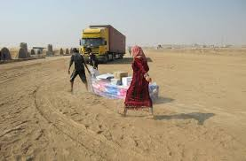
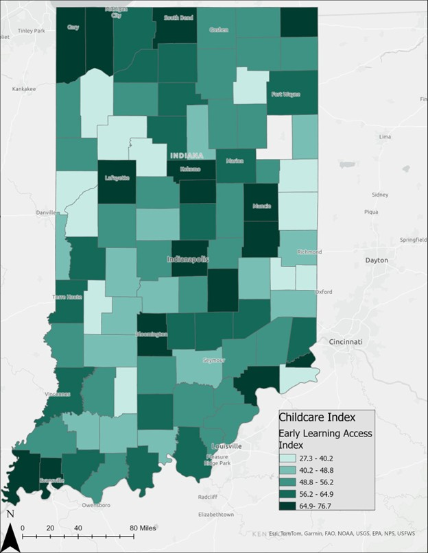
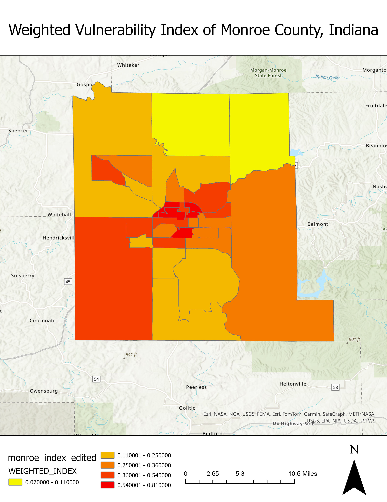
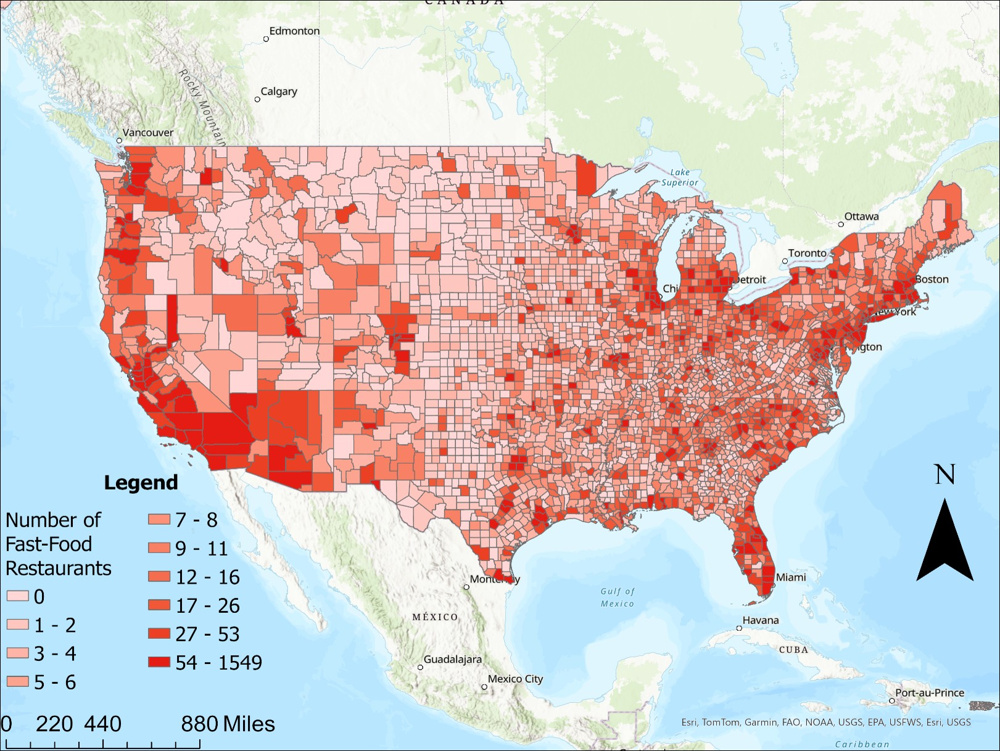

I’m Bryce Deckard, a Geography graduate from Indiana University with a focus in GIS and Remote Sensing. I use mapping, satellite imagery, and spatial analysis to explore global issues—from environmental change to food vulnerability. This portfolio highlights some of the stories I’ve told using data.
I earned my B.A. in Geography from Indiana University with a concentration in GIS and Remote Sensing. I’m passionate about using spatial analysis to explore international issues, environmental risk, and economic vulnerability. My work combines geospatial tools like ArcGIS, QGIS, and Google Earth Engine with data-driven storytelling. Whether it's tracking algae blooms or mapping hunger hotspots, I approach every project with curiosity and precision.
This project is currently in development and will serve as the centerpiece of my portfolio. A brief explanation of why it's central to my work will go here.
Tracking algae blooms in Lake St. Clair using MODIS NDVI and GEE.
Multi-sector environmental vulnerability report created by a large collaborative team.
Mapping food vulnerability in Monroe County, Indiana.
Analyzing the spatial relationship between fast food density and poverty in The United States.